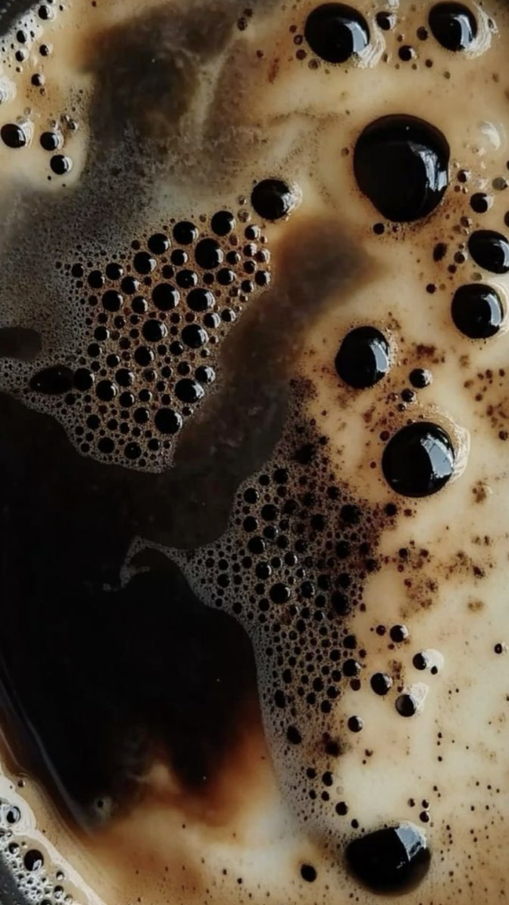

We don't list prices. If you're asking, you probably don't need to be here yet.

Coffee
Espresso. Nothing else. Served without ceremony or explanation. If you need to ask what it tastes like, order something else.
Espresso with steamed milk pulled so slow it arrives already cold on one side. Named by a regular who hasn't been back to explain.
We decide. You were going to sit here for two hours regardless. Trust us.
A double. Reserved for the hour after 3am. We don't ask why. You don't explain. It comes with a glass of water no one asked for.
Cold brew, steeped for eighteen hours, served over a single large cube of ice that takes forty minutes to melt. You will wait.
A cortado, prepared in silence, delivered in silence. The barista will not make eye contact. This is intentional. It is the best thing we make.
Not Coffee
Tea for people who came to sleep but stayed to think. Served in a cup with a small chip on the rim. We consider it character.
Just water. Hot. We don't judge. Sometimes that's all you need and we've been open long enough to know.
A cold glass of water, placed on the table when you arrive, whether you want it or not. It has been called the best thing on the menu. We didn't name it. Someone else did.
To Eat
Bread, toasted. Butter on the side. No options. Available until the bread runs out, which it hasn't in eleven years.
Comes with every order whether you want it or not. Nobody has ever complained. One woman asked for three. We obliged in silence.
Soft boiled. Available only between 4am and 5am. We've never understood why people order it but we've never stopped making it.
We do not have oat milk. We did once. Something happened. We don't discuss it. The chamomile is always available. The biscuit is always free.